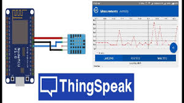
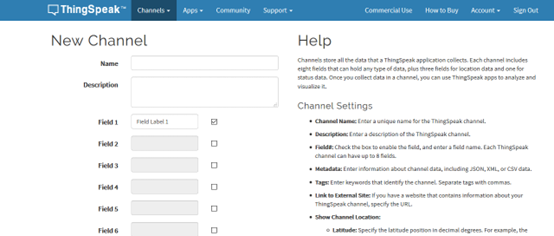
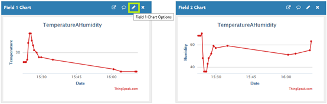
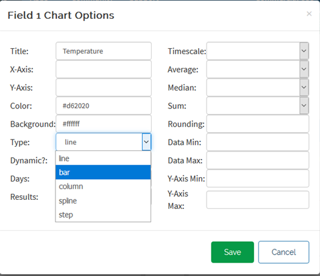
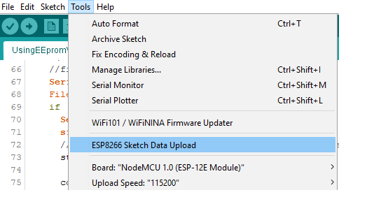
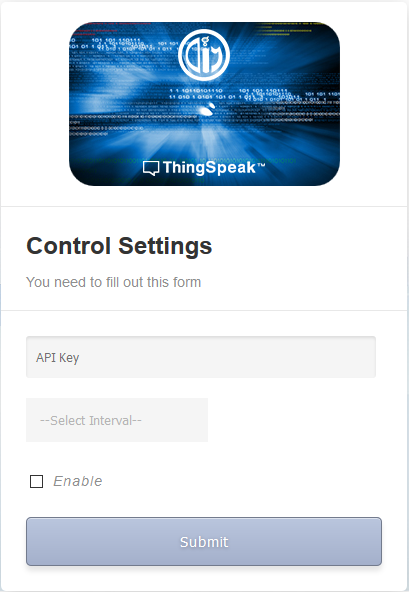

In this post: Learn to use ESP8266 NodeMCU with a DHT11 sensor to send data to ThingSpeak.
ThingSpeak: https://thingspeak.com
ThingSpeak is an open IoT platform with MATLAB analytics. You can send sensor data to ThingSpeak and visualize it in charts.
The ESP8266 reads temperature and humidity via the DHT11 sensor, connects to ThingSpeak via Wi-Fi, and sends data using HTTP GET requests. A web server on the ESP8266 enables configuration of logging parameters:
Configurations are managed via an HTML page hosted on the ESP8266 web server.
Create a free account on ThingSpeak. Go to “My Channels” and click “New Channel.” Add a name, description, and fields, then click “Save Channel.”

Figure 2: Creating a ThingSpeak channel
You can edit charts by clicking the chart options. Set the chart title, type, color, and more.
 
Figure 3: Editing chart options
The DHT11 sensor comes in two variants: one with 4 pins and another with 3 pins (the latter includes an embedded resistor). Here is the wiring:
Figure 4: Wiring diagram
Upload the html files in the data folder to the SPIFFS by clicking “ESP8266 sketch data upload” https://github.com/esp8266/arduino-esp8266fs-plugin from the tools menu – be sure that the serial window is closed- this will add the control settings page to the ESP8266 web server.

Figure 5
Install the following libraries:
Also include these internal libraries in your code:
After uploading the HTML files and code, configure the WiFi manager to save router credentials through the access point “AutoConnectAP.” Configure ThingSpeak parameters through the configuration HTML page.

Figure 6: Configuration page
Once configured, the ESP8266 sends sensor data to ThingSpeak based on the logging interval. View the data in ThingSpeak charts. The complete source code is available on GitHub.
Thank you for reading!